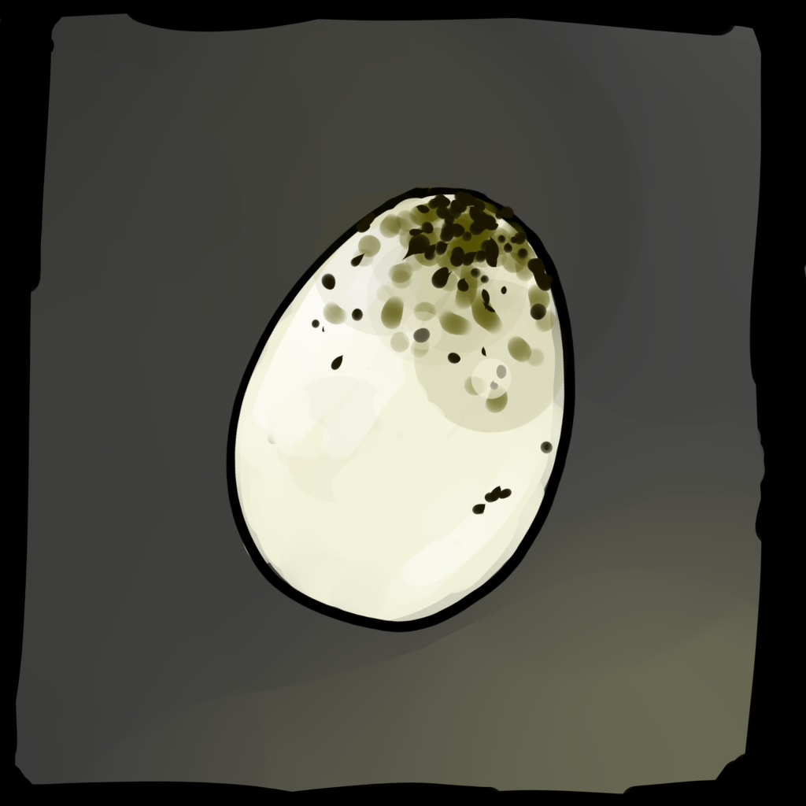
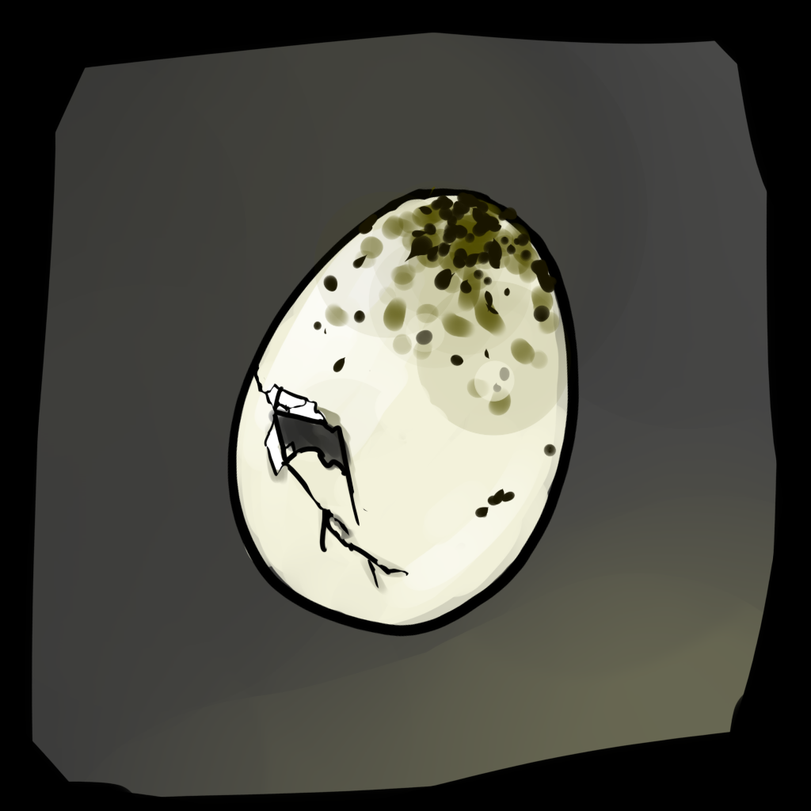
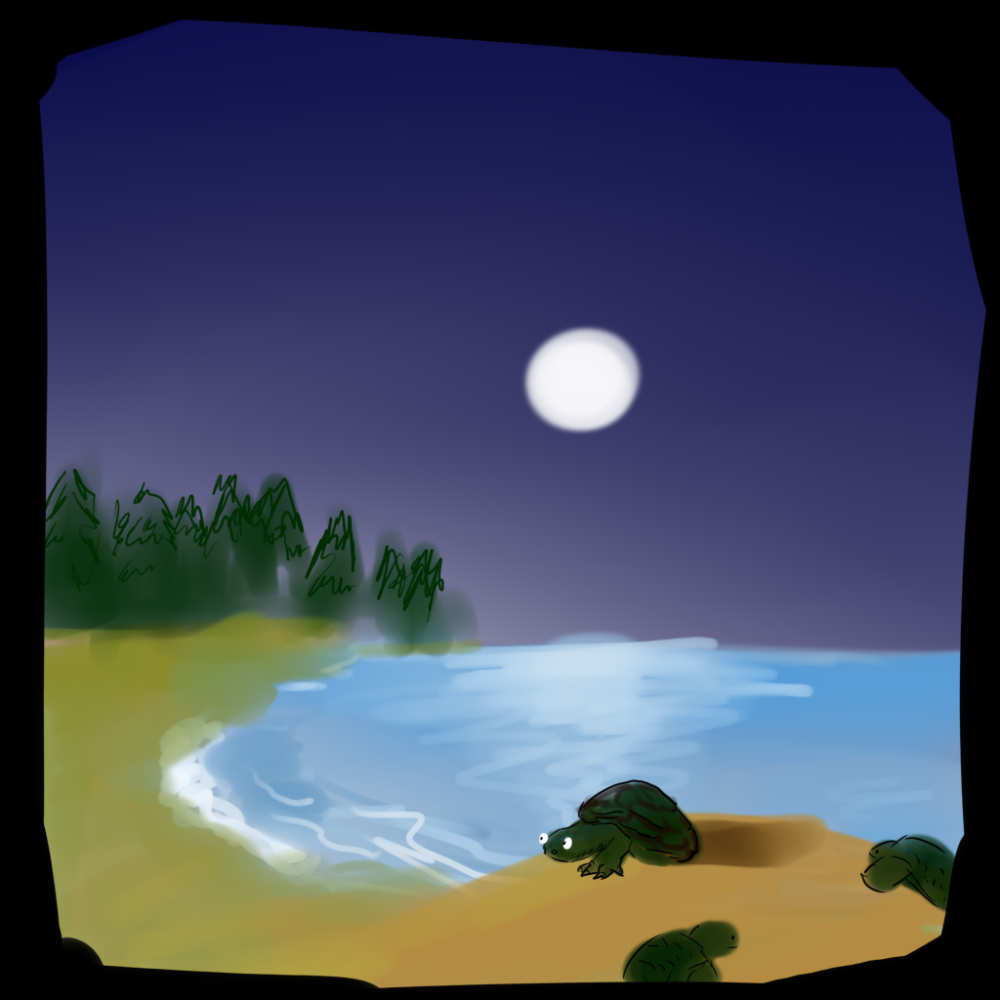
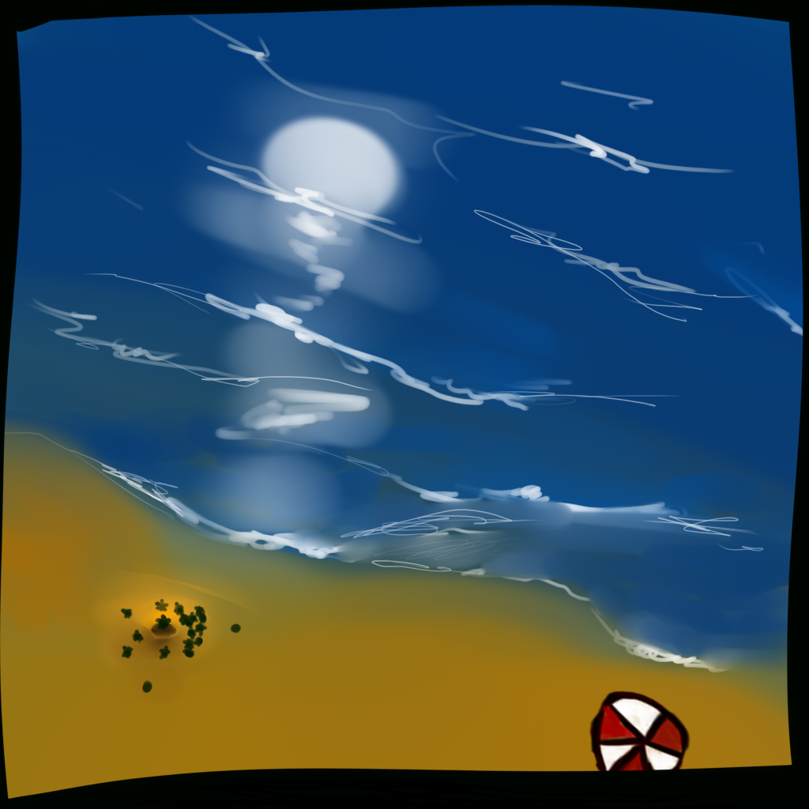
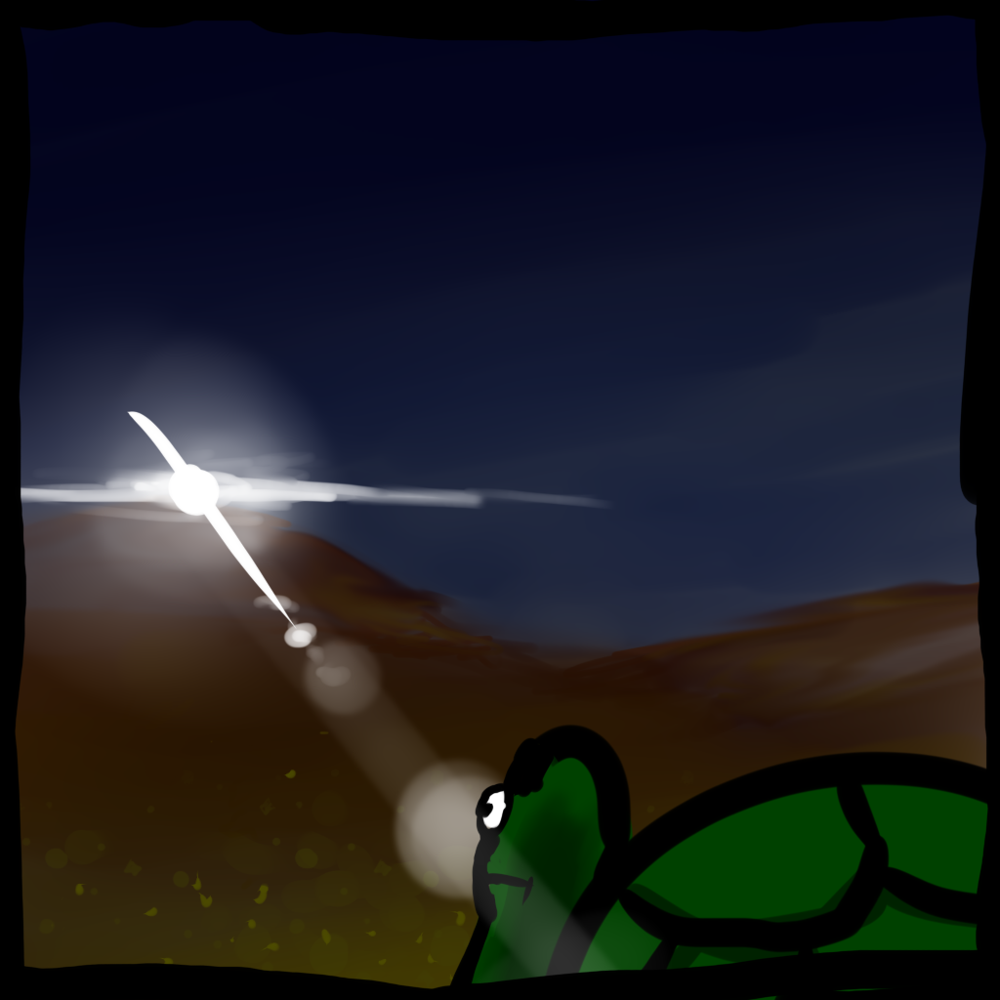
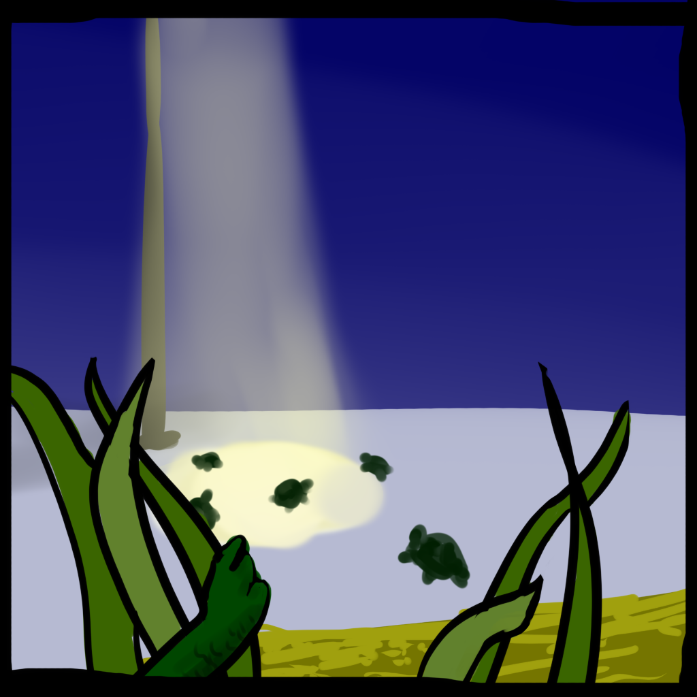
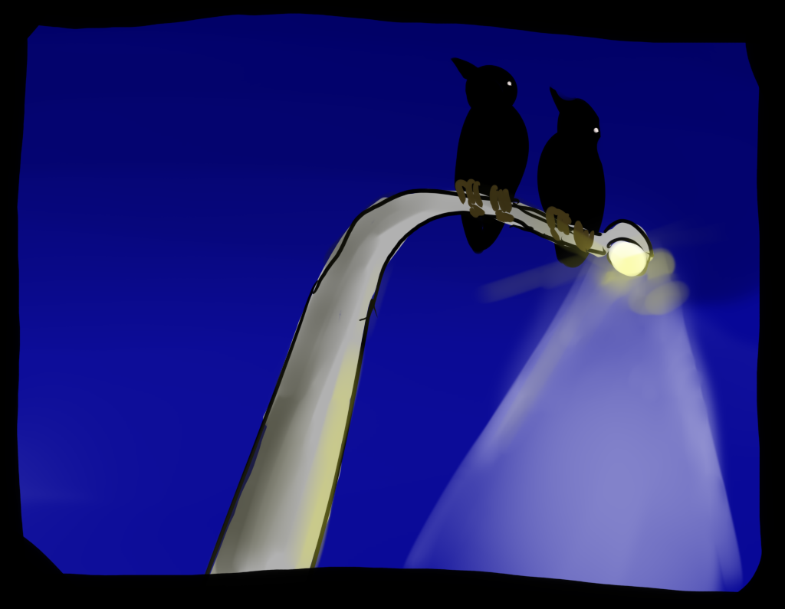

I wait in darkness, my body trapped within my natal home.

From beyond the thin white shell I hear the cramped, nervous rustling of my siblings anxious to begin our lives. The temperature has cooled pleasantly over the past few days… maybe weeks. We know tonight is perfect. I begin slowly pummeling against the shell wall.
Cracks form and small particles of yellow sand begin funneling into my previously sterile home.

With my new heart filling my arteries with fresh blood, I push and feel the crack expand and the shell give away. I crawl out, struggling to swim against the sand. As my head peeks out above the sea shore, I take a moment to watch as my siblings make it out after me.

In seconds dozens emerge, with the beach sand bubbling with countless turtles on their journey upwards to the surface. Within the pitch dark night, in my tiny corner of the world, there is excitement. As we inhale our first breath of cold air and swarm aimlessly, crawling over and falling each other with our leathery flippers, we know that we are alive.

The exuberance of childhood and wonder is short lived for me. Though as a hatchling turtle I am relatively large and strong, I am still nevertheless powerless to escape the sharp talons of shorebirds or the hard pincers of surf crabs.
Straining my sand crusted head from outside my shell, I narrow my eyes and scan my surroundings. To my left is relentless darkness but I can make out a blinding source of light from a distance as I begin crawling to the right. I see many of my brethren have already begun this journey and I follow.

The inching forward is exhausting and slow, though I know I must be quick to dodge the ever present threat of predators. Once I reach the moonlit oceans, I will be able to swim faster, though the sea brings about its own set of challenges to overcome.
The light is now only fifteen yards away. The terrain has become more steep and the shoregrass more abundant. The half dozen hatchlings around me begin to speed up excitedly, and trample across the grass quickly. Behind me there is a trail of several dozen more turtles following our shallow prints in the sand. As I part the blades of grass in front of me and continue on I descend into a vast concrete clearing. A circle of gray stone is illuminated like daylight in front of me.

The other hatchlings waddle around in the illuminated area, confused, casting harsh shadows against the pavement.
- - -
Perched above on the lamppost, two seagulls look hungrily below towards the swarm of baby turtles basking in the warmth of the streetlight.

Swooping down with their claws erect, they find an easy supper.
Me.
Artificial light at night near beaches harm turtle populations all around the world by inhibiting baby turtles from reaching the ocean when they are born. Find out more about this issue and how you can help here.